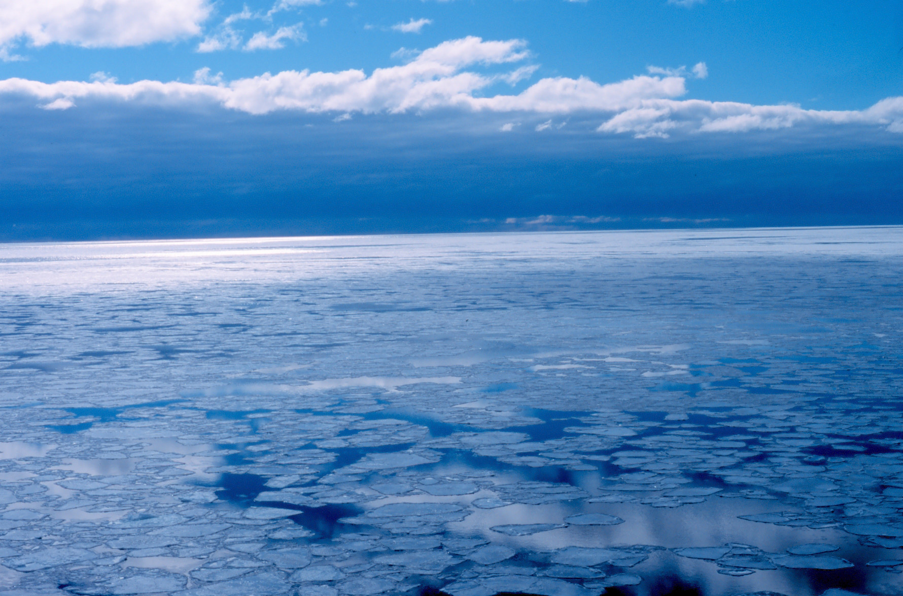
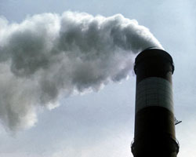
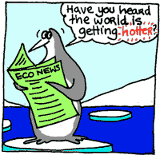
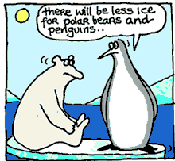

Il continente antartico nasconde molti misteri per la scienza moderna.
Una di questi misteri è la questione dello scioglimento. Cosa sta veramente succedendo sul continente? Sappiamo che il ghiaccio del continente si sta sciogliendo, ma perchè?
Si sta sciogliendo a causa del surriscaldamento terrestre o questo è semplicemente un processo naturale che spetta al nostro pianeta? Oppure è una combinazione di entrambe le possibili ragioni?
Questo è un odierno dibattito su cui non abbiamo ancora tutte le risposte. Comunque, la cosa essenziale è che effettivamente l'Antartide si sta sciogliendo.

Ci sono due principali piattaforme di ghiaccio che formano il continente antartico. Queste sono quella di Ross e quella di Ronne. Focalizzeremo la nostra attenzione sulla piattaforma di Ross nelle seguenti righe.
La piattaforma di Ross è il principale emissario per parecchi grandi ghiacciai situati nella zona ovest del continente, e è più estesa dello stato del Texas. Tre anni fa sulla piattaforma di Ross si iniziarono a staccare iceberg così grandi che si possono confrontare per grandezza col Massachusetts e il Connecticut. Quale fu la causa di questo distaccamento di iceberg dalla piattaforma? Alcuni esperti puntano alla teoria di un movimento interno di espansione e restringimento, un naturale processo o forze esterne. Il problema di questa teoria è il fatto che noi semplicemente non abbiamo abbastanza dati storici per provare se è naturale aspettarsi che tale processo si verifichi nel continente.
La miglior spiegazione per lo scioglimento della piattaforma di Ross, e di tutto il ghiaccio dell'Antartide, sembra essere la produzione eccessiva di calore terrestre.
Il riscaldamento della terra è largamente causato dall'inquinamento delle automobili e dall'effetto serra ed è una chiara e presente minaccia per la nostra salute,
la nostra economia e il nostro ambiente naturale. Sappiamo che il clima terrestre si sta riscaldando, e a dimostrazione di ciò il 2002 è stato
il secondo anno più caldo che il pianeta abbia mai visto. E' secondo solo al 1998 con il 1999 terzo per molto poco. Le piattaforme si stanno ritirando e la causa
di ciò è attribuita al forte surriscaldamento nella regione. Questo continuo riscaldamento si è stimato sia attorno agli 0.5 gradi Celsius per decade, dagli anni '40.

Questo naturalmente pone la questione di cosa esattamente stia succedendo al continente antartico e alla piattaforma di Ross. Abbiamo già osservato grandi iceberg staccarsi dal continente, alcuni dei quali sono grandi come certi stati. Per esempio i due iceberg C18 e C19, si sono staccati dalla piattaforma di Ross. Si sa che il C18 misura circa 164 square nautical miles e il C19 circa 1,835 square nautical miles. Possiamo chiaramente vedere che il ghiaccio in Antartide si sta sciogliendo osservando che questi iceberg si staccano violentemente delle piattaforme che mantengono fredda la maggior parte delle acque di questo pianeta. Se la sola piattaforma di Ross si sciogliesse, il livello delle acque marine salirebbe di circa 16 piedi. Ciò significherebbe la fine di gran parte della Florida e altre regioni del mondo. Gli effetti dello scioglimento dei ghiacci, insomma, sarebbero devastanti.
Questi iceberg stanno causando difficoltà sempre maggiori per il passaggio di navi e per la stazione di servizio McMurdo, situata sulla piattaforma. McMurdo è una compagnia di costruzione dalla quale il National Science Foundation trasmette il programma americano in Antartide. Senza il servizio dei capitani che incontrano difficoltà nel pilotare le loro navi a causa di tutto questo ghiaccio, molte ricerche sul continente di cui si necessita soffrirebbero grandemente. La vita degli animali, come quella dei pinguini Adeleia, riscontra problemi derivanti dallo scioglimento e dallo staccamento dei ghiacci. Sta diventando pericoloso per loro andare alla ricerca di cibo in mare,e come risultato, il loro numero va via via diminuendo drammaticamente. Gli esperti prevedono che gli animali potrebbero abbandonare molte delle loro aree tradizionali, in cui vivevano, per sempre. I pinguini hanno inoltre problemi aggiuntivi per l'allevamento dei cuccioli. Il ghiaccio sta bloccando la strada delle colonie in cui allevano e cibano i piccoli. Come risultato devono percorrere 30 miglia per procurarsi cibo, cosa ardua potendo camminare solo alla velocità di un miglio all'ora.


Possiamo vedere facilmente i problemi che sorgeranno se il mondo continuerà ad incrementare il surriscaldamento globale.
I devastanti effetti dello scioglimento dei ghiacci nel continente antartico non saranno solo avvertiti là,
ma cambieranno addirittura la vita di tutte le specie su questo pianeta. Gli uomini devono trovare una soluzione per ridurre,
e possibilmente eliminare, la combustione di materiali fossili; se falliremo nell'obiettivo potrebbe avvenire una veloce e tragica estinzione di molte specie animali,
inclusa quella umana. Noi uomini dobbiamo trovare un modo per ridurre ed infine eliminare velocemente la combustine di materiali fossili non rinnovabili.